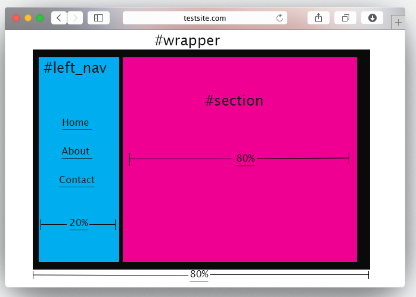
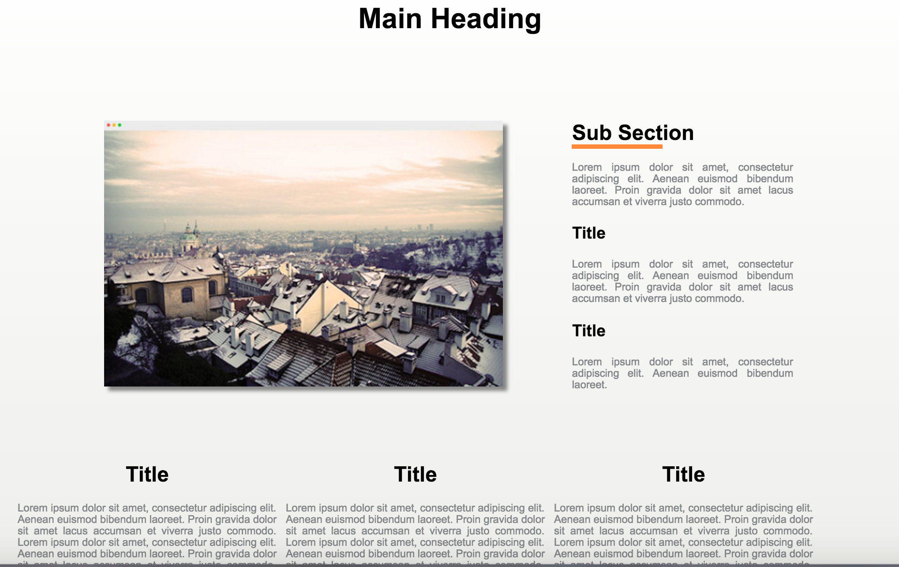

Session 4 Tasks
Please only use external styles for this task.
Task 1 - Style up your week one page
Set up
- Inside your
internet_techdirectory create asession4folder. - Copy your webpage from session1 into the
session4folder you just created. - Create a new style sheet and
<link>it into your webpage. It's a good idea to place the style sheet in a new folder e.g.css.
Let's make your page look a little but more presentable
Please go wild and style the page as much as you like, but as a minimum I want to see you complete the below tasks. Once done your page should resemble the layout below:

- Section up your site using a minimum of 3
<div>'s#left_nav,#sectionand#wrapper` which holds all the content. - To start with give
#left_nava width of 20% and#sectiona width of 80%. - Give
#wrappera width of 80% and centre align it using#wrapper {margin: 0 auto;} - Add a different
background-colorto#left_navand#section. - Use
floatto position#left_navand#sectionside by side, as per the mock up above. - Use a
<ul>...</ul>to create a basic navigation list in#left_nav. Have at least 3 links, but you don't need to create the corresponding pages. Here's how to create a placeholder link:<a href="#"> Home </a> Apply some pseudo classes to your links, so they change colour based on their status. Below is an example:
a:link {color:#FF0000;} /* unvisited link */ a:visited {color:#00FF00;} /* visited link */ a:hover {color:#FF00FF;} /* mouse over link */ a:active {color:#0000FF;} /* selected link */Resize the image and centre align it.
- Remove the bullet points from the
<ul>nav list (Optional)
Task 2 - Advanced Task
If you manage to complete the below task, email me your Github link to the repository
- Using semantic HTML and CSS3 layout the below mock up
- It should be pixel perfect, notice how the subsection underline does not span the whole heading
- You can find the mock up here
- You can find the main image here
{kind=link}
{kind=link}

You should ensure you use the following techniques:
- Create a GitHub repo and use it to store your work
- The the main content should be in a wrapper
divset to a width of 980px and alined to the centre - Add a white to grey gradient to the wrapper, work out how make the gradient resemble the mock up above
- Add a drop shadow to the photo
- You should use the following HTML5 tags
<section>,<aside>,<header>